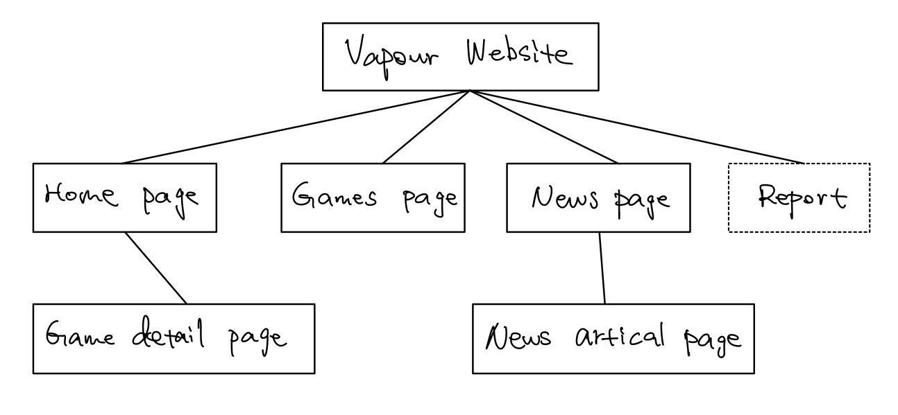

Yiding Luo
Introduction
The website that I have build is for our real-life gaming community. Users can find information about featured games, browser all game libraries, get the latest gaming news and get details of an individual game.
There are 5 designed webpages and 1 report pages for my website. Home page (index.html), Games page (games.html), News page (news.html) and the Report page (report.html) can accessed by clicking the links on the nevigation bar.
The Game details page (eastward.html) can accessed by clicking the eastward game card in the Home page (index.html).

The News article page (animal.html) can accessed by click the first news post in the News page (news.html).

Inspiration
All the existing gaming website are in boring design, so I decided to make a well-designed gaming website to represent some gaming news and gives the user a tremendous interactive website experience.
Most of the gaming website focuses on one aspect precisely, like news, games’ library or gives each game’s details. So we could make a website that covers all those aspects.
It is an excellent way to advertise our gaming community with a helpful website. A well-structured and good designed website can make our community more colourful.
Accessibility
This website is accessible for people that cannot see it. Each image is well labelled and well described by text to hear information about the images and text with specific tools.
This website is accessible for farsighted people or people that need bigger fonts. There is option allows user to choose from three different font sizes.
This website is accessible for mobile users. Each site has been adjusted to be controlled by a smaller screen, with an efficient way to represent contents.
Usability
I have made a nice-looking navigation bar on each page with some great animation. The menu icon changes to cross when you open the menu list indicated that click to close the menu bar. This helps the user to use this website more accessible.
I have made all clickable section with a hover effect so that the user can know clearly that this section is clickable and where they are.
I have created a game filter for the users. When the users browsed in the game library, there might be a considerable number of games, so that a filter would be helpful for the users to find the game they are looking for.
Learning
I have learned how to create a responsive image carousel. This is a challenging task for me since it involved all HTML, CSS and JavaScript. I have managed it by searching examples on the internet and changing the styling to match my website.
I have learned how to design a website. When doing the term project, there were other members to do the design part, and now I have to do it myself. I have achieved that by browsing various fashion websites and art designs to build the best design for our gaming community website.
I have learned how to build a responsive website for different screen sizes. The content layout usually is different on the large screen and small screen. To achieve this, I have looked at quite a lot of website that has a responsive design and uses the inspect function in the browser to see their CSS layout to see how they achieved that kind of responsive effect.
Evaluation I (strengths)
All the JavaScript requires a section that I have made are using pure JavaScript, without any library. The final result is as good as using a library. The animation is smooth, and the effects are awe-inspiring.
Another aspect of my website that I think is particularly successful is the content layout. I have changed lots of content layout from a large screen view to a small screen view to allow users to have the same experiences even on a smaller screen.
Evaluation II (weakness)
There are many aspects that I can improve on my website. The first one is that I have created one JavaScript file for each website; I think this is unnecessary since I have a navigation bar for each website, and the same function will be called due to, I have many JavaScript files. I am doing this is because there always be some errors if there are some functions that are not on the pages, and I cannot figure out how to fix them. The good thing is that I solved this by creating lots of .js files, but I know this is inefficient.
Another aspect is that for the Game detailed page (eastward.html), the sidebar contains much less information than the main content section. My original idea is to have another section within the sidebar and move it to the bottom of the page when on a mobile screen. In the end, I did not achieve my idea, so I have removed this section. If I have more time, I am going to build a grid layout to structure these contents.
Resources
While building this website, the tools that I think helped me a lot is the Visual Studio Code. This software can have many useful extensions, such as a live server, which allows the page to refresh automatically during the coding.
For the home page (index.html), the games page (games.html) and the news page (news.html), all the images I have been using are from (https://store.steampowered.com/), by download the game cover.
For the game details page (eastward.html), I copied the text and images from the official steam website (https://store.steampowered.com/app/977880/Eastward/) and structured a similar layout using my own code.
For the news article page (animal.html), I copied the text and images from the IGN website (https://www.ign.com/articles/animal-crossing-new-horizons-gets-mario-items-next-week), and structured a similar layout using my own code, and rebuild the images slider to a more user-friendly way.
Appendices
Site map
Wireframes for the large screen devices
↓↓↓↓↓ Wireframe for large screen devices - Home page - index.html ↓↓↓↓↓

↓↓↓↓↓ Wireframe for large screen devices - Games page - games.html ↓↓↓↓↓

↓↓↓↓↓ Wireframe for large screen devices - News page - news.html ↓↓↓↓↓

↓↓↓↓↓ Wireframe for large screen devices - Game detail page - eastward.html ↓↓↓↓↓

↓↓↓↓↓ Wireframe for large screen devices - News article page - animal.html ↓↓↓↓↓

Wireframes for the small screen devices
↓↓↓↓↓ Wireframe for small screen devices - Home page - index.html ↓↓↓↓↓

↓↓↓↓↓ Wireframe for small screen devices - Games page - games.html ↓↓↓↓↓

↓↓↓↓↓ Wireframe for small screen devices - News page - news.html ↓↓↓↓↓

↓↓↓↓↓ Wireframe for small screen devices - Game detail page - eastward.html ↓↓↓↓↓

↓↓↓↓↓ Wireframe for small screen devices - News article page - animal.html ↓↓↓↓↓

Mock-up for the large screen devices
↓↓↓↓↓ Mock-up for large screen devices - Home page - index.html ↓↓↓↓↓

↓↓↓↓↓ Mock-up for large screen devices - Games page - games.html ↓↓↓↓↓

↓↓↓↓↓ Mock-up for large screen devices - News page - news.html ↓↓↓↓↓

↓↓↓↓↓ Mock-up for large screen devices - Game detail page - eastward.html ↓↓↓↓↓

↓↓↓↓↓ Mock-up for large screen devices - News article page - animal.html ↓↓↓↓↓

Mock-up for the small screen devices
↓↓↓↓↓ Mock-up for small screen devices - Home page - index.html ↓↓↓↓↓

↓↓↓↓↓ Mock-up for small screen devices - Games page - games.html ↓↓↓↓↓

↓↓↓↓↓ Mock-up for small screen devices - News page - news.html ↓↓↓↓↓

↓↓↓↓↓ Mock-up for small screen devices - Game detail page - eastward.html ↓↓↓↓↓

↓↓↓↓↓ Mock-up for small screen devices - News article page - animal.html ↓↓↓↓↓